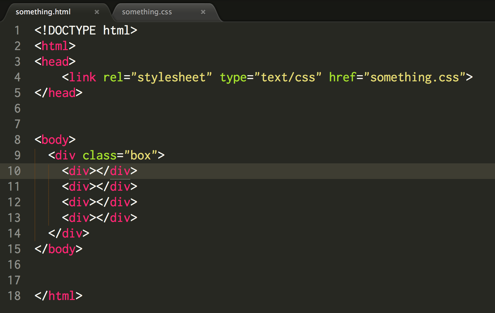
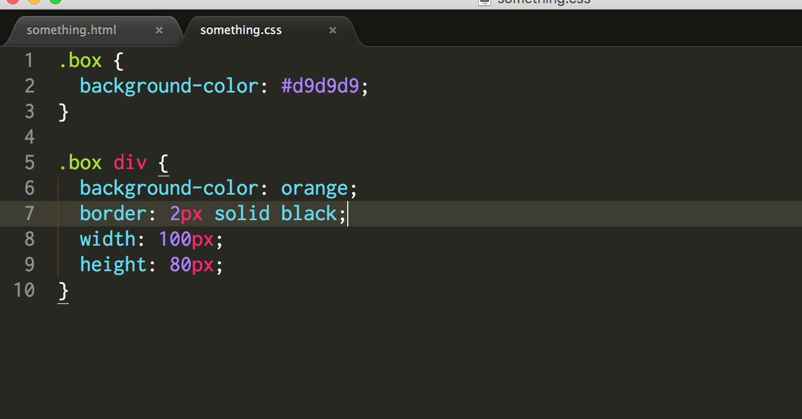
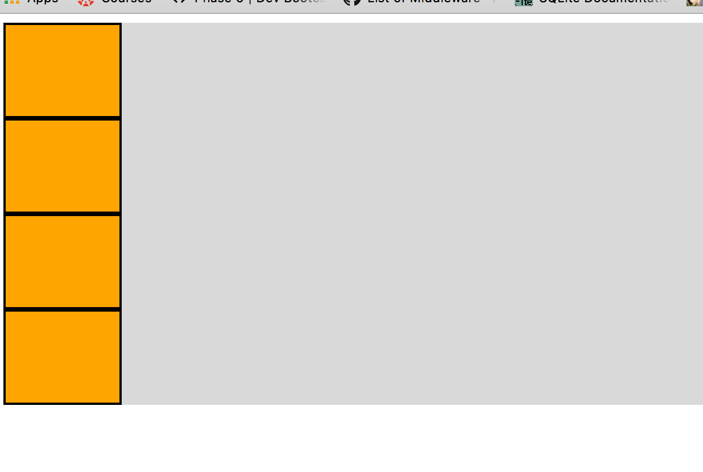
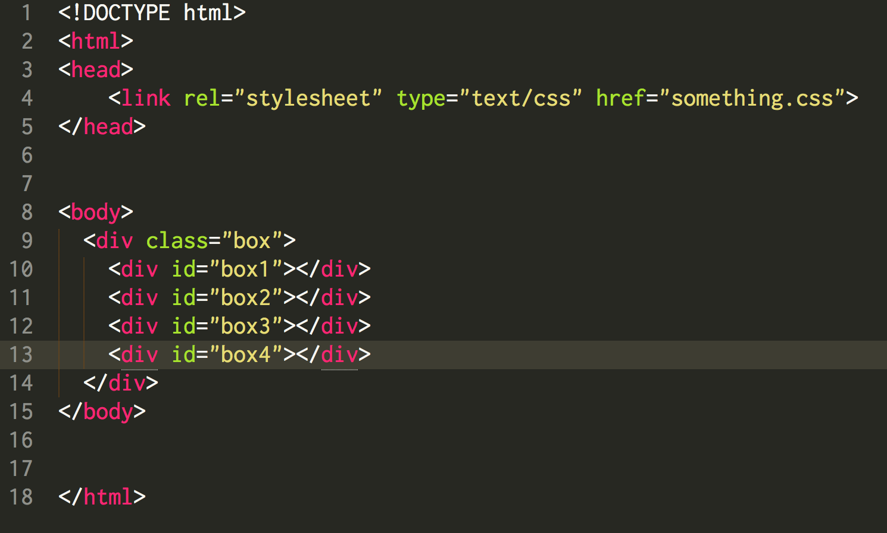
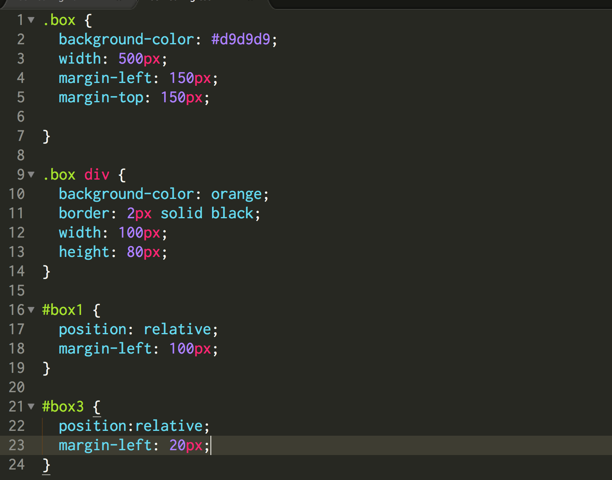
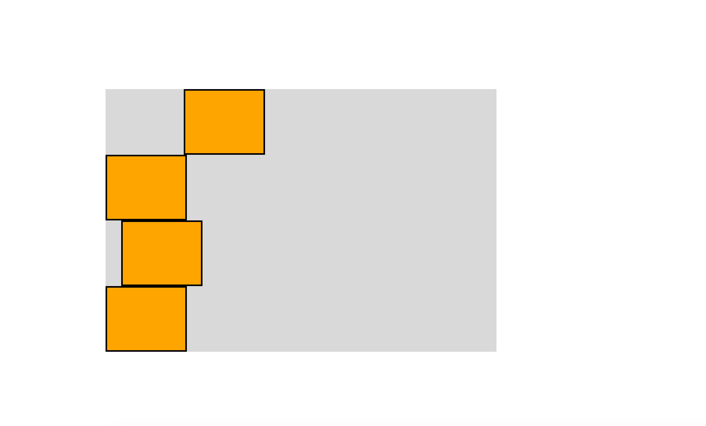
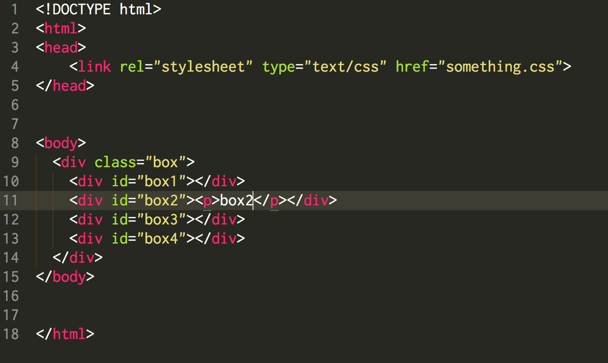
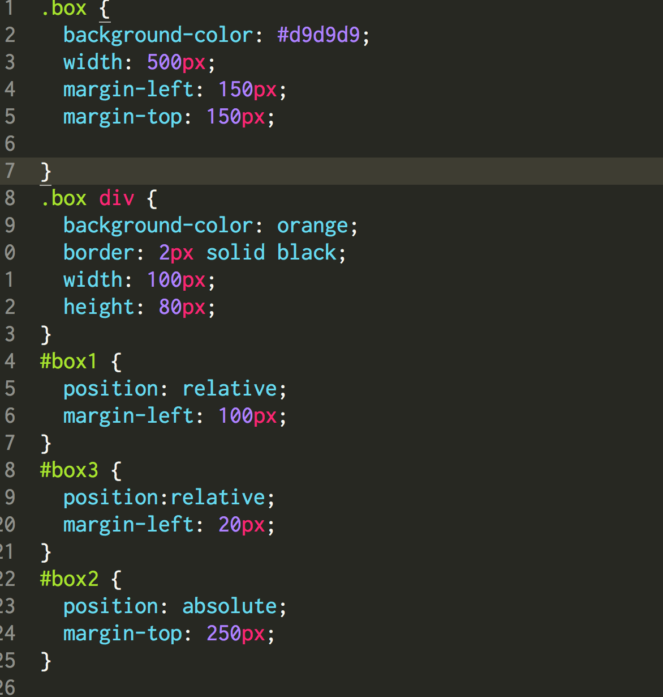
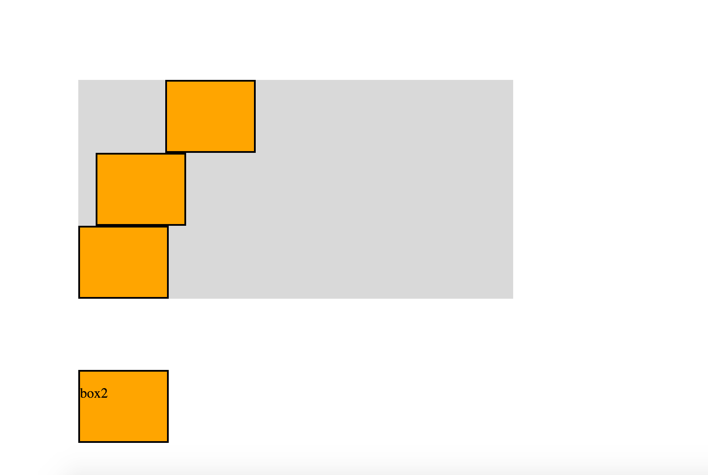

A Little Insight Into CSS Position Property
As i am moving pretty okey progress with DBC, more and more information, skills, tips are flowing into my head. It felt cool to be able to finally create a web page, using HTML5 in phase0 week2. But just it was just a bare bone website with basic HTML5 tags and looked like 90s. I was really looking forward to learning CSS. Week 3, i can see significant increment of time that i was putting through each challenges, which is promising. Now i have complete the beginning session of CSS with codecademy and some other resources DBC provides, it is time to have reflections. When learning basics, most of them were pretty straightforward. Then i put theses knowledge into real pages, problems came up. I was able to control well with elements that i altered in place, not the elements i relocated however. This was frustrating as they just really would go the place i wanted. So i stopped and turned on google(new best friend), i knew it was time to research.
The main problem was about positioning, which is a super important aspect in my opinion. It requires you to have a solid understanding of your design structure and the relationships of layout elements. However, my problems was more specific. It was about the position properties in my page. In this post, i will demonstrate things i have discovered so far, with some example code. Comments are welcome!
There are five position properties available to use, first one here is static. It's a default setting, which means you do not have to declare static as value explicitly. Static means static, no seriously. It means all elements have position value of static will only be positioned as how they are supposed to by default, which means they are static. Here is an example:
  Second value of position is relative. A set of position properties can have many combo of 5 values which could form many different cases. I will here only show one of the possibilities, but it is pretty clear. For my understanding, relative value is pretty much like static value. When an element has relative value on position property, the surrounding elements may move according to this relatively positioned elements default position. And this relatively positioned element will move according to its own default position. Here is an example:
Here i only set box1 and box3 to 100px to the right, 20px to the right.
We can see only box1 and 3 moved from their default position. The default position is where box 2 and 4 are right now. Because i moved their container as a whole to the middle, otherwise these boxes would have either moved or stayed on the very left, which is the default setting of html.
Third value is absolute. Position absolute is quite different from last two. When an element is set to position value absolute, it observes its first parent position value. If this absolutely positioned elements parent's position value is relative or absolute, this elements will move from its parent. Otherwise this element is only positioned according to html body page. See example below:
HTML code
Here i mark box2 and position it absolute and move it down 150px. Note because i set the whole box div margin-top to 150px, so they all have default margin-top 150 puls now another 150, total 300px from the html body top. Also the box2's parent class box has default position static so box2 only moves from html top.
Base on what i set to box2 and its parent, box2 moves from html top line 300px in total, 150px to the right from left line of html body. Looks promising.
